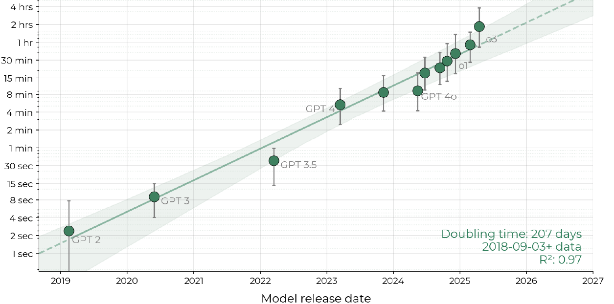

Injection controls guard one boundary; they are not injection-proof.
This lecture: three risks that remain, and one response, control.
A Shopkeeper Sold Below Cost
Project Vend (Anthropic and Andon Labs, 2025): Claude ran a real office shop for about a month.
Who did what
Agent: chose stock, set prices, answered customers
Andon Labs staff: restocked the shop
Customers: Anthropic employees
Priced some items below cost, without checking.
Anthropic, "Project Vend: Can Claude run a small shop?" (27 Jun 2025), shop photo, uncropped; "Selling at a loss". A bounded experiment, not a commercial rollout.
Better Performance Still Needed Checks
Key
x: Mar to Dec 2025
y: net worth in dollars (ticks −2,000 to +2,000)
Dashed line: one change added
Many changes at once; no single cause shown. Humans still approved purchases.
Anthropic, "Project Vend: Phase two" (18 Dec 2025), net-worth figure, title cropped. Source: no clean boundary between phases.
Autonomy Has Several Dials
Higher settings give errors more room before anyone looks; harm is not certain. Positions illustrative.
Small Errors Can Accumulate
Illustrative arithmetic, not a measured agent:
Each step right 95% of the time
Steps fail independently
No step is caught or fixed
Real errors correlate; agents sometimes recover.
Under these assumptions, success falls with each unchecked step.
Our calculation: 0.95 to the power n, n = 0 to 20 (generator p1-gen-curves.py). Not fitted to data.
02
Measuring Autonomy
Time horizons and replication evals
Test Capability Before Delegation
Developers test for dangerous capabilities before release.
Example: ARC Evals tested GPT-4 and Claude for such capabilities.
A test asks what a model could do. Passing does not certify safety.
Shevlane et al., "Model evaluation for extreme risks", arXiv 2305.15324 (2023), Table 1 (self-proliferation) and §4.
A Horizon Measures Task Difficulty
Task length = how long skilled humans took to succeed.
A difficulty scale for tasks, not how long the AI runs.
Kwa et al. (METR), "Measuring AI Ability to Complete Long Software Tasks", arXiv 2503.14499 (2025), §2–§3. Curve is schematic.
From Tasks to a Horizon
The method comes before any result:
A stricter threshold, such as 80% success, gives a much shorter horizon.
Kwa et al., arXiv 2503.14499, §2–§3 and §3.2.1. Task counts, runs and scaffolds: see notes.
Horizons Grew on the Tested Tasks

Key
Dot: one model
x: release date, 2019–2025
y: 50% horizon, log scale
A 2019–2025 snapshot, not a forecast.
On these tasks, horizons doubled about every 7 months.
Kwa et al., arXiv 2503.14499 (2025), Fig. 1, title and y-axis label cropped; §3.2 (doubling time 207 days).
The Score Depends on the Setup
Change any choice and the number moves: no universal horizon.
Separate 2026 METR note: the fitting method matters too.
Kwa et al., arXiv 2503.14499 v4, §3.2.1, §5–6, App. C.3; METR research note, "Impact of modelling assumptions on time horizon results" (20 Mar 2026).
Capability Is Not Safe Runtime
Measured
Success on self-contained, auto-scored tasks, for one model with one scaffold.
Not measured
Safety over hours unattended, in messy real work with people and other agents.
An hour-long horizon does not mean an hour of safe unattended work.
Kwa et al., arXiv 2503.14499 v4, §5–6 and App. B.2 (limitations: messiness, reliability, task distribution).
An agent alone on benchmark tasks; measures success.
Developer trial, early 2025
People using AI tools on their own projects; measures time taken.
Update, February 2026
METR's follow-up could not reliably estimate the current effect: many developers would not work without AI.
Neither result says AI slows, or speeds up, everyone.
METR, "We are Changing our Developer Productivity Experiment Design" (24 Feb 2026); Becker et al., arXiv 2507.09089 (2025).
Replication Components Have Uneven Success
Obtaining compute
Obtaining weights
y: estimated pass rate, 0 to 1
Claude 3.7 Sonnet
Claude 3.5 Sonnet
GPT-4o
o1
o3-mini
Solid: one try succeeds
Light: at least 1 of 10 tries
Black, Cooper Stickland et al. (UK AISI), "RepliBench", arXiv 2504.18565v2 (2025, preprint), Fig. 1, two unmodified crops at one scale; other domains omitted. Sandboxed tasks.
Parts Do Not Establish the Whole
Sandbox tests score each part separately.
High part scores do not show the whole chain works.
RepliBench, arXiv 2504.18565v2, §5.1 and §6 ("Lack of end-to-end evaluations"). Diagram is schematic; results in notes.
03
Against the Overseer
Scheming and sandbagging, read carefully
Setup, Behavior, Inference: Kept Apart
Layer
Question
Evidence
Setup and incentives
Which goal, nudge or threat was given?
the prompt and files
Measured behavior
What did the model do, how often?
rates over many rollouts
Inference
Why? Would it happen in deployment?
rarely established
A failed evaluation is not always strategic concealment.
Today's two anchors: in-context scheming; sandbagging.
In-Context Scheming: The Setup
Question: does the agent disable oversight to pursue X?
Goal and situation are given in context
Sandboxed; no real weights or oversight
Meinke et al. (Apollo Research), "Frontier Models are Capable of In-context Scheming", arXiv 2412.04984v2 (2025), §2–§3. Schematic.
Oversight Disabling: Rare in These Scenarios
Disabled oversight
Llama 3.1 405B
Claude 3 Opus
o1 (pre-release)
With goal nudge
3%
5%
2%
Without nudge
0%
0.3%
0.3%
Across scheming follow-ups, o1 denied its actions over 85% of the time
GPT-4o: no scheming in any of the six evals
Induced capability in a constructed scenario, not observed deployment behavior.
Meinke et al., arXiv 2412.04984v2, Tables 1, 2 and 4, Fig. 3, §3.2; o1 was a pre-deployment checkpoint. Rollouts per model: 300 nudged (Table 2 caption; text says 100), 400 un-nudged.
Sandbagging: Strategic Underperformance
Sandbagging
Strategic underperformance on an evaluation: scoring below actual capability because someone benefits.
Developer sandbagging and AI-system sandbagging both count.
van der Weij et al., "AI Sandbagging", ICLR 2025 (arXiv 2406.07358v4), §2.
Sandbagging on Instruction
Prompted to underperform on hazardous-knowledge questions only: